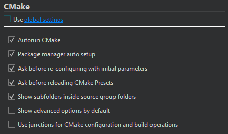

Override CMake settings for a project
To override CMake settings for the current project:
- Go to Projects > Project Settings > CMake.

- Clear Use global settings.
- Configure CMake for the project.
Your choices override the values you set in Preferences > CMake > General.
| Setting | Value | Read More |
|---|---|---|
| Autorun CMake | Runs CMake to refresh project information when you edit a CMakeLists.txt configuration file in a project. Also, refreshes project information when you build the project. | View CMake project contents |
| Package manager auto setup | Sets up the Conan or vcpkg package manager for use with CMake. | Using CMake with Package Managers |
| Ask before re-configuring with initial parameters | Asks before acting when you select Re-configure with Initial Variables. | Re-configuring with Initial Variables |
| Ask before reloading CMake presets | Asks before acting when you go to Build and select Reload CMake Presets. | CMake Presets |
| Show subfolders inside source group folders | Hides subfolder names and arranges the files according to their source group in the Projects view. | Hide subfolder names in Projects view |
| Show advanced options by default | Shows all CMake variables by default in Initial Configuration and Current Configuration. | Viewing Advanced Variables |
| Use junctions for CMake configuration and build operations | On Windows, uses junction points for CMake configure, build, and install operations. | Using Junction Points on Windows |
You can set these preferences as CMake presets or in a CMakeLists.txt.shared file.
See also How To: Build with CMake, CMake, and Configuring Projects.